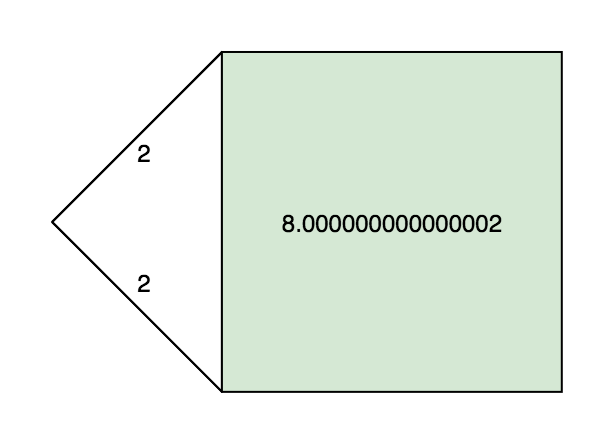
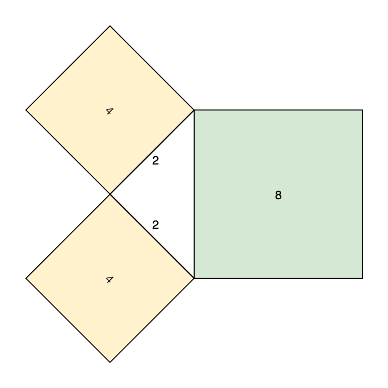

The Holy Trinity
Abstraction, FP and Math
Marek Kidoň
10.2.2019
Previously on FPBrno
- DSLs and Recursion Schemes (by Marek)
- Functional Programming Introduction (by Fero)
- Extensible Effects (by Matej)
Why would you event want to do this?
– Audience
Abstraction is the act of representing essential features without including the background details or explanations.
– www.technopedia.com
The essence of abstractions is preserving information that is relevant in a given context, and forgetting information that is irrelevant in that context.
– John V. Guttag
Human Machine Correspondence
There is no correspondence between human and machine. Only divergence.
- Machines are superb at calculating things, humans are not.
- Humans are great at symbolic reasoning, machines are not.
Abstraction is a tool to bridge the divergence of human and machine.
The purpose of abstraction is not to be vague, but to create a new semantic level in which one can be absolutely precise.
– E. W. Dijkstra



vs.
vs.
Magic constants aka concretising way too early:
vs.
Does NOT compose!
- Maximum power
- Minimal amount of reasoning
vs.
If you constrain yourself from power, you get (not only) reasoning back.
There is no such thing as correct code.
But abstraction effectively constrains the number of primitives we can use.
- Less primitives reduces the number of possible implementations
- Less possible implementations => less incorrect implementations
FP allows for reasoning by constrains
- Totality
- Pureness
- Lack of side effects
You get the toolbox for free
Simplicity is a great virtue but it requires hard work to achieve it and education to appreciate it. And to make matters worse: complexity sells better.
– E. W. Dijkstra